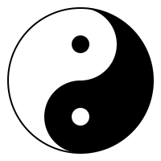
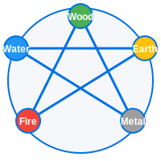
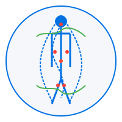

What is Traditional Chinese Medicine?
Traditional Chinese Medicine (TCM) is a holistic health system with a history spanning over 2,500 years. Unlike Western medicine, which often focuses on treating specific symptoms or diseases, TCM aims to understand and treat the underlying patterns of disharmony in the body to restore balance and promote wellness.
Understanding TCM Body Types
One of the fundamental concepts in TCM is the idea of 'constitution' (体质 or tǐzhì). Your body type represents your inherent nature and tendencies, influenced by genetics, lifestyle, and environment. Knowing your TCM constitution helps guide appropriate lifestyle, diet, and treatment choices for optimal health.
The Main TCM Constitution Types Include:
- Qi Deficiency (气虚 / qì xū): Characterized by low energy, easy fatigue, and weak immune function
- Yang Deficiency (阳虚 / yáng xū): Showing signs of cold intolerance, slowness, pale complexion, and low metabolism
- Yin Deficiency (阴虚 / yīn xū): Manifesting as heat symptoms, night sweats, dry mouth, and restlessness
- Phlegm-Dampness (痰湿 / tán shī): Featuring heaviness, fluid retention, digestive issues, and foggy thinking
- Blood Stasis (血瘀 / xuè yū): Indicated by poor circulation, fixed pain, and dark complexion
- Balanced (平和 / píng hé): The ideal state with good harmony of all systems and proper Yin-Yang balance
Key Principles of Chinese Medicine
How to Balance Yin and Yang Naturally
Yin and Yang represent opposing but complementary forces that must remain in balance for good health. Yin is cooling, nourishing, and passive, while Yang is warming, energizing, and active. Imbalances in either can lead to various health issues.
Balance is achieved through proper diet, exercise, rest, emotional regulation, and sometimes herbal remedies targeted to your specific pattern.
The Five Elements in TCM
Wood, Fire, Earth, Metal, and Water represent different qualities and relationships in the body and nature. Each element corresponds to specific organs, emotions, tastes, seasons, and more, creating an interconnected system for diagnosis and treatment.
Understanding how these elements interact helps practitioners identify patterns of imbalance and restore harmony.
Qi Energy and TCM Diagnosis
Qi is the vital energy that flows through the body along specific pathways called meridians. When Qi flows smoothly, health is maintained. Blockages or deficiencies in Qi can lead to various symptoms and health issues.
TCM practitioners assess Qi through pulse diagnosis, tongue examination, and symptom analysis to determine appropriate treatments.
Frequently Asked Questions
What does TCM mean?
TCM stands for Traditional Chinese Medicine, an ancient medical system that includes various practices such as herbal medicine, acupuncture, massage (tuina), exercise (qigong), and dietary therapy. It's based on the concept that disease is caused by imbalances in the body's vital energy.
How accurate is TCM diagnosis?
TCM diagnosis differs from Western medicine as it focuses on identifying patterns of disharmony rather than specific diseases. The accuracy depends on the practitioner's skill and experience. It's often complementary to, rather than a replacement for, Western medical diagnosis. Many people find value in combining both approaches.
How does Chinese medicine treat symptoms?
Rather than treating isolated symptoms, Chinese medicine aims to address the underlying imbalances causing those symptoms. Treatment may include herbs, acupuncture, diet modifications, and lifestyle changes tailored to your specific constitution and pattern of disharmony.
Medical Disclaimer
This quiz and its recommendations are for informational purposes only and should not replace professional medical advice, diagnosis, or treatment. Always consult with a qualified healthcare provider before making significant changes to your diet or lifestyle or starting any TCM treatments.
Discover Your TCM Body Type
Take our comprehensive assessment to find your constitution pattern and get personalized recommendations
Take the TCM Body Type QuizContact Us
Have questions about Chinese medicine or our body type assessment? We're here to help.
zhenliwang9@gmail.com